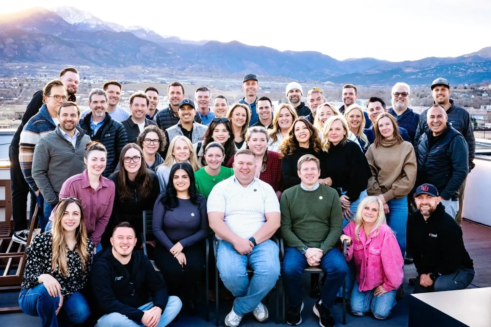

A few years ago, I realized I was running my property management company in a vacuum.
Sure, there were Facebook groups, conferences, and vendor webinars, but none of it scratched the itch. Everyone was talking at each other, not with each other. Half the time, you’d get advice from someone who’d never actually signed a management agreement. The other half, it was a pitch.
I remember sitting at my desk one afternoon after yet another “networking” call that went nowhere, thinking: Where do the serious operators go? Where do you find the people who actually run solid PM businesses… folks who are testing systems, tracking metrics, and building teams that work without them?
That question stuck with me.
Eventually, I called up my friend Wolfgang Croskey, another operator who was seeking something similar. We talked for hours about how fragmented this industry still is. Tons of talent. Tons of ideas. But very few real communities built on trust, curiosity, and shared experience.
So we decided to build what we couldn’t find anywhere else.
That’s how Crane was born: a private, moderated network for property management professionals who actually do the work. No fluff, no drama, no “gurus.” Just real conversations, peer support, and a shared goal of helping each other grow stronger companies.
If you’ve ever felt like you’re figuring this business out alone, I built Crane for you.
Let’s dig into what it’s all about.
What Is Crane?
Crane is a community-driven network for serious property management operators. Think of it as a mastermind meets resource hub meets peer group - all built specifically for people running property management companies day in and day out.
At its core, Crane exists to help property managers learn, connect, and grow. It’s a place where owners and leaders can swap ideas, compare notes, and tackle challenges with others who actually get what it’s like to manage a team, deal with owners, and keep the business profitable.
When Wolfgang and I started Crane, our goal wasn’t to create another membership club or coaching program. We wanted to build a true operator’s network - a trusted space for collaboration, education, and support. A place where the conversations go deeper than “what software do you use?” and into “how are you structuring comp for your maintenance coordinator?”

That's the Crane network: a property management mastermind built on trust, collaboration, and a shared commitment to doing great work. Our purpose is simple: to deliver freedom of time to property management leaders through empowered connections and fun, engaging experiences.
Why Crane Exists
Real Growth, Not More Noise
Running a property management company can feel like reinventing the wheel every single day. You’re hiring, training, managing owners, juggling compliance, and trying to keep up with tech that changes faster than your lease renewals. And the truth is, most of us started this business without a roadmap.
For years, I felt that same frustration. Every conference promised “networking,” but what I really wanted was collaboration. Real conversations with other operators who were in the trenches - sharing what actually worked, not theory or sales pitches.
That’s why we built Crane.
And unlike many communities led by coaches or consultants who've stepped away from the business, Wolfgang and I are still in it. We both run property management companies. We know what it's like because we're living it alongside you.
Crane exists to give property managers a space to collaborate, learn, and grow together. It’s not about adding more noise to your inbox or another Slack group you’ll never open. It’s about access (to real playbooks, proven systems, and peers) who will tell you what actually moved the needle in their business.
Inside Crane, you’ll find everything from expert-led masterminds to member-driven discussions that cut straight to the good stuff: fees, hiring, automation, and leadership. But the real magic happens between the meetings: when one operator shares a process that saves another hours a week, or when a member finally takes their first “Crane Break” (a real, phone-off vacation) because their systems and team can run without them.
That’s the whole point. Growth that creates freedom, not burnout.
Crane was built for property managers who want to stop guessing, start collaborating, and build companies that thrive (with or without them).
What You Get as a Member
When you join Crane, you’re not just signing up for another platform - you’re stepping into a well-curated ecosystem built to help property management business owners run smarter, grow faster, and breathe easier. Every part of Crane membership was designed to solve a real problem you face day to day.
Here’s what that looks like in practice:
Community & Masterminds
Crane starts with the one thing most property managers are missing: a real peer network.
Moderated Mastermind Community: A private, distraction-free online space where serious PM operators share questions, challenges, and hard-won lessons. Every conversation is focused, respectful, and aimed at helping members improve their businesses.
Monthly Live Masterminds: Interactive calls led by members and experts where you can workshop real issues in real time, whether that’s fine-tuning your maintenance process, adjusting fee structures, or navigating growth. These aren’t webinars; they’re working sessions designed to get you unstuck fast.
Resources & Tools
You’ll also unlock access to tools and systems that help you build a stronger, more efficient operation.
Peter’s Notion System: A full library of templates, SOPs, and workflows from my own property management company. Tested, refined, and ready to plug into your business.
RTM Talent Pool: Each month, Crane sources vetted candidates for property management-specific roles like Administrative Assistants and PM Specialists, so you can spend less time recruiting and more time leading.
Partner Perks: Members get exclusive access and discounts from trusted industry partners like AppFolio, ProfitCoach, LeadSimple, RentScale, Property Meld, Blanket, and Second Nature. These aren’t affiliate deals - they’re real value-adds negotiated specifically for Crane members.

Support & Expertise
Even the best systems break without the right support. That’s why Crane gives you access to real people who can help you troubleshoot and level up.
PM Systems & Automation Expert: A dedicated in-house specialist who can help you streamline workflows, connect your software stack, and build automations that actually work.
Full-Time Community Manager: Keeps discussions active, events organized, and ensures members get the most out of their experience.
Expert Webinars & Office Hours: Regular sessions with Wolfgang, myself, and other industry leaders, where you can ask direct questions, get candid feedback, and learn what’s working across top-performing companies.
The bottom line? Crane membership is designed for execution. It’s not theory, and it’s not fluff. You’ll find proven systems, expert support, and a community that genuinely wants you to win. Because when one of us gets better, the whole industry does too.
The Crane Values
Every strong community is built on shared values. At Crane, these principles aren’t just words on a wall - they guide how we show up, collaborate, and help each other get better. They’re the foundation of why this network works so well for property management leaders who care about excellence and integrity as much as results.
Selective: Purposeful by Design
We're careful and intentional about who joins Crane and what we choose to do. Every application is reviewed, and membership is vetted. That's not exclusivity for its own sake — it's how we protect the quality of conversations, the trust inside the community, and the value you get from being here. The right room matters.
Member Obsession: You Come First
Everything inside Crane is built around one question: how do we make this better for our members? We're constantly finding ways to elevate the people inside this community — better resources, stronger connections, more meaningful experiences. When our members win, Crane wins. It's that simple.
Show Me the Data: Decisions Backed by Evidence
We're a data-oriented community. The best operators we know don't run on gut feelings alone — they track metrics, test systems, and measure results. Crane reflects that mindset. We lead with evidence, share real numbers, and help members make smarter decisions based on what's actually working.
Make a Splash: Show Up and Stand Out
Crane — and everyone in it — draws positive attention wherever we go and whatever we do. That means bringing energy, showing up with our best ideas, and leaving a mark on every event, conversation, and interaction. We don't blend in. We raise the bar.
Figure It Out and Get It Done: Bias for Action
We're operators. We make decisions, move quickly, and figure things out as we go. Crane isn't a place to sit on ideas — it's a place to test them, learn from them, and keep moving. Done beats perfect, and momentum beats hesitation every time.
These values shape everything inside Crane. They’re why the network feels different… more grounded, more useful, and more human.
What Members Are Saying
One of the best parts of Crane isn’t something we built - it’s the people inside it. The conversations, the shared breakthroughs, the “I thought I was the only one” moments. That’s where the real transformation happens.
Here’s what a few members have said about their experience inside Crane:
“Crane has transformed my property management approach. The high level of trust and openness allows me to share real numbers and insights freely. The categorized conversations make it easy to access valuable information quickly. It’s been a game-changer!”
— Jay Maxwell, Arena Group, College Station, TX
That’s what Crane is about - people who aren’t afraid to talk about the real stuff: numbers, systems, wins, and failures. When members share openly, everyone levels up.
“What I love about Crane is easy. Real operators, real playbooks, real results. The masterminds and curated tools help us pressure-test ideas, cut through noise, and move more quickly. Collaborating with top property managers has accelerated our growth in ways a course never could.”
— Aaron Roberts, Authority PM, Redding, CA
Aaron nailed it. Crane isn’t a classroom. It’s a room full of peers who test, refine, and share what’s actually working. You don’t just learn theory here; you learn what people are doing to grow and scale their businesses today.
“For the first time in fifteen years, I fully stepped away from my business—15 days, four countries, and not a single phone call. Crane gave me the confidence to be present for my honeymoon, and my team rose to the challenge.”
— Matthew Nicklin, One Source Rentals, Woodstock, GA
That story still gives me goosebumps. It’s what we call a Crane Break - the moment your systems and people are strong enough to give you your time back (more on this later). That’s the measure of success inside this community.
“Crane has completely transformed my approach to property management. By embracing the business idea of running efficiently without my constant involvement, I’ve been able to shift from working around the clock to achieving a better work-life balance.”
— Susan Goulding, Crown Key Realty, San Francisco, CA
Susan’s story is one I hear often. Less chaos, more clarity. More support, less burnout. That’s the ripple effect when operators collaborate instead of compete.
The bottom line? Crane works because its members do. They show up, share openly, and help each other build better companies (and better lives) in the process.
The Crane Break: A New Definition of Success
In most industries, “success” gets measured by how busy you are. More doors. More staff. More hours. But inside Crane, we look at it differently.
A Crane Break is when you can step away from your business (completely) and nothing falls apart. No frantic calls, no fires to put out, no guilt for taking time off. It’s the ultimate proof that your systems, team, and leadership are working the way they should.
One of my favorite member stories comes from Matthew Nicklin in Georgia. After fifteen years of being glued to his phone, he finally took his honeymoon - fifteen days, four countries, zero calls. His business ran beautifully without him. That’s a real Crane Break.

When you surround yourself with other operators who are optimizing processes, sharing templates, and holding each other accountable, you start to build a business that runs because of you, not around you. You move from being essential to being effective.
A Crane Break isn’t about checking out - it’s about building something that doesn’t need you every minute to survive. It’s proof of leadership, not absence.
That's our guarantee: Crane is here to help you build time freedom. Not someday — with the right systems, the right peers, and the right support, you can get there now.
Because at the end of the day, success in property management isn’t just about growing your company. It’s about building a business (and a life) you don’t need a vacation from.
How to Join
Crane isn’t for everyone, and that’s intentional. It’s a vetted, operator-only community built for people who take property management seriously and want to keep getting better.
If you’re the kind of owner who’s constantly refining processes, mentoring your team, or looking for ways to scale without chaos, you’ll fit right in. Membership gives you access to masterminds, resources, and real relationships with operators who are running successful PM companies across North America.
We review every application to make sure members bring value and get value. That’s how the conversations stay high-quality and the community stays strong.
If you’re ready to connect with peers who’ve been where you are (and can help you get where you want to go) apply to join the network at joincrane.co.
NOTE: Applications only open twice a year, so be sure to jump on my newsletter if you're interested in joining.